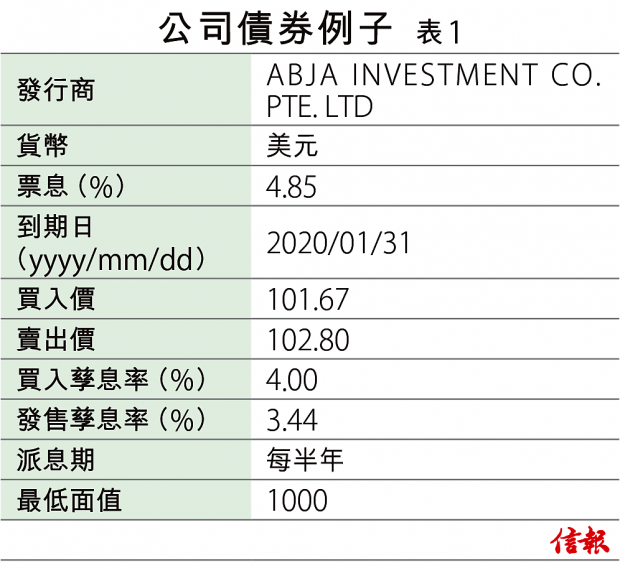
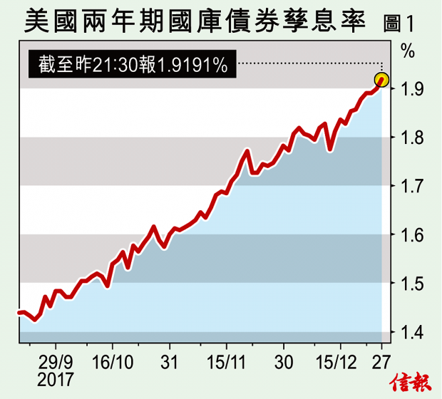
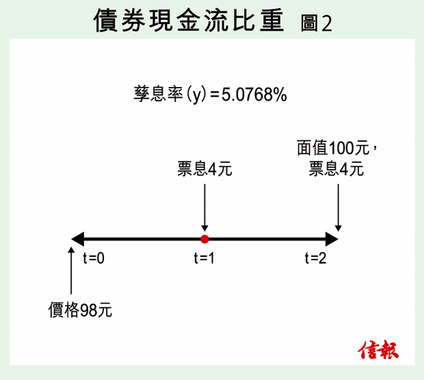
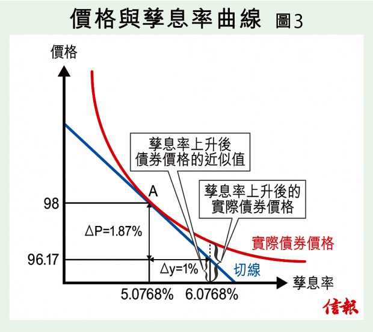

香港人重股輕債，投資者一窩蜂買股票，忽略了在債券方面的投資。學術界的財經課程也偏重於股票市場，有關債券的理論和實踐，其深入程度相比於股票而言有比較大的差距。最近聯儲局決定加息四分之一厘，並預期明年加息三次，在利率趨升的形勢下，債券價格必然波動，我們也趁機在本欄跟讀者惡補一下︰如何衡量債券的利率風險。
債券的主要風險為利率風險和信用風險，我們以美國兩年期國庫券及兩年到期的公司債券為例，來探討一下信用風險。美國國庫券一直被投資者視為無信用風險，而公司債券會有違約的風險，所以美國國庫券與公司債券在孳息率上有一個差距，這個差距稱為信用利差（Credit Spread），用作補償投資者所額外承受的風險。
以ABJA INVESTMENT的公司債券為例，其信用利差等於4%–1.89%=2.11%，其中4%為該債券的孳率，而1.89％為兩年期國庫券的孳息率【表1】。
由於最近美國成功通過近30年來最大的稅務改革，一般預期改革能夠加速美國的經濟發展。投資者對高風險的投資項目例如股票市場有較大胃納，美國國庫券被投資者大舉拋售，兩年期美國國債的孳息率由9月的1.45%攀升至約1.89%【圖1】。
如果發行債券的企業在基本面上沒有太大變化，其信用風險是相當穩定，所以信用利差不變；國庫債券的孳息率上升，帶動了債券的孳息率也向上飆升，於是債券價格向下調整，這就是債券買家所要面對的利率風險。
孳息率與價格成反比
但為什麼孳息率上升會導致價格下跌呢？我們首先要明白孳息率是怎樣計算出來的。
債券由一串現金流組成，為了獲取這筆現金流，投資者於開始時付出市場價格買入該債券，以【圖2】為例，該價格P為98元，債券兩年到期，面值為100元，票息率為4厘，所以其現金流如【圖2】所示為4元和104元，根據這些數據我們可算出這項投資的孳息率。
假如用一個固定的利率y，就可以把現金流折現到當下，折現後的總值為4/（1+y）+104/（1+y）²。如果我們找出y值使到總值等於價格98元，y就是該項投資的孳息率，又稱為債券的回報率。
以【圖2】的現金流及價格為例，計算出的y值為5.08%。第一筆現金流（4元）折現後為3.81元，第二筆現金流（104元）折現後為94.19元，總和剛好是98元。
這兩筆現金流對投資者來說有不同的比重，前者比重為3.81/98=3.89%，後者比重為94.19/98=96.11%。這些現金流的比重對以後有關利率風險的計算有很大關係。
以上計算指出︰價格P與孳息率y的關係為P=4/（1+y）+104/（1+y）²，所以這個關係可以用下面的曲線表示【見圖3，橫軸為y縱橫為P】，此曲線是一條由左上到右下的曲線，所以當債券的孳息率y上升時，價格P下跌。此曲線於A點有一條切線 （Tangent Line），愈斜的切線代表債價因應利率變動而跌得愈急。所以曲線的斜度（Slope），就是債券利率風險的最佳量度。
久期愈短 利率風險愈小
如何計算出曲線的斜度？不用繪圖也可以，但先要計算該債券的存續期（又稱久期，Duration）。久期其實是現金回流期的一個加權平均，以【圖2】的債券為例，第一筆現金流是4元，回流期是一年，第二筆現金流為104元，回流期為兩年，所以平均回流期應該等於一年及兩年的平均，但由於兩筆現金流有不同的比重，所以要計算回流期的加權平均。
加權平均=94.19/98×2+3.81/98×1=1.96（年），這就是該債券的久期，一般用符號D代表，D=1.96。由以上的計算方法可以推論出久期的一些特性︰（一）久期小於債券的年期；（二）如果票息率很低，最後那筆現金流的比重很大，所以久期差不多等於債券的年期；（三）票息率愈高，久期愈短，利率風險愈小【圖2】。
回到【圖3】於A點的切線，這個切線的斜率等於∆P/∆y，可以證明這個斜率與久期有一個數學關係︰斜率/價格=-久期/（1+孳息率），我們把公式的右邊稱為修正久期（Modified Duration，MD = D/（1+y）），以【圖2】的債券為例，修正久期等於1.96 /（1+5.08%）=1.87。
可以利用修正久期通過以下公式計算債券價格的變動，∆P/P≈-MD×∆y，公式的左邊代表債券價格改變的百分比，右邊的∆y代表孳息率的變化︰假如利率上升1%（∆y=1%），預期債券價格下跌的百分比會是1.87%，而1.87剛好就是該債券的修正久期。
但是價格的真正變動是以圖中的曲線為準，而切線只是一個近似值，所以修正久期並不代表真正的價格變動。如何估計更準的價格變動呢？就要明白債券的特性，我們下期將會再作介紹。
陸俊杰為金融交易員
鄒小敏為理工大學專業進修學院客席講師
林建教授為香港浸會大學榮休教授兼香港大學統計精算學系榮譽教授
Article from HKEJ Source